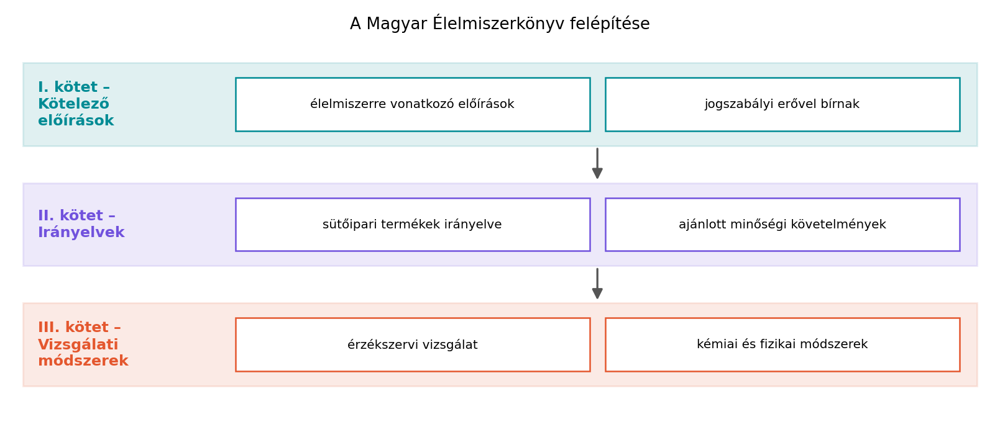

Egy pékségben hajnalban megsütik a búzakenyeret, a zsemlét és a kiflit. A vevő csak annyit lát, hogy a termék friss, szép és jó illatú. A hatósági ellenőr azonban már kérdezni fogja: melyik előírás szerint nevezik „búzakenyérnek”, hol van a termék gyártmánylapja, milyen minőségi követelményeknek felel meg, és milyen allergént tartalmaz. Ha a pék erre nem tud dokumentált, pontos választ adni, az nemcsak kellemetlen, hanem súlyos élelmiszerjogi hiba is lehet. Ugyanez a helyzet a vevői reklamációnál: ha valaki allergiás, vagy ha a termék tömege nem megfelelő, a gyártmánylap és az Élelmiszerkönyv szerinti követelmény a vita alapja. Ezért ebben az alfejezetben a minőség szabályozási és dokumentációs hátterét tanuljuk meg.
A Magyar Élelmiszerkönyv nem egyetlen receptkönyv, hanem egymásra épülő szabályozási réteg. Az alábbi rétegábra azt mutatja, hogy a kötelező előírások, az irányelvek és a vizsgálati módszerek hogyan kapcsolódnak egymáshoz.

A felső réteg a kötelező előírás, a középső a termékcsoportokra vonatkozó irányelv, az alsó pedig az ellenőrzés módszertana. A pékségben mindhárom réteg együtt biztosítja, hogy a termék azonosítható, ellenőrizhető és a fogyasztó számára tisztességesen leírható legyen.
Definíció. A Magyar Élelmiszerkönyv (Codex Alimentarius Hungaricus) a Magyarországon alkalmazandó élelmiszer-előírások, irányelvek és vizsgálati módszerek gyűjteménye. Célja, hogy a gyártó, a hatóság és a fogyasztó egyaránt tudja, mit kell érteni egy-egy élelmiszer megnevezés, összetétel vagy minőségi jellemző alatt.
Szabály. A tanulás és az üzemi gyakorlat során külön kell választani a három réteget (a könyv a rövidség kedvéért „kötetnek” nevezi őket; a Magyar Élelmiszerkönyv valójában számcsoportokba rendezett: a kötelező előírásokat az 1-es, az irányelveket a 2-es számcsoport tartalmazza, például a sütőipari termékek irányelve, MÉ 2-81 (ellenőrizendő: a hatályos szerkezet és a jelzetek)):
Előírás. A Magyar Élelmiszerkönyv I. kötete a kötelező előírásokat tartalmazza; a II. kötetben találhatók a sütőipari termékekre vonatkozó irányelvek. A termék megnevezését és minőségi követelményeit a hatályos irányelv szerint kell rögzíteni a gyártmánylapon. (ellenőrizendő: a Magyar Élelmiszerkönyv hatályos szerkezete, a sütőipari termékek irányelvének pontos címe, száma és követelményei)
Megjegyzés. A köteteket mindig a hatályos, frissített kiadásban kell használni. Egy régi, kinyomtatott példány félrevezető lehet, mert az előírások változhatnak. A pékségben ezért a gyártmánylap mellé célszerű feltüntetni, hogy melyik irányelv vagy szabvány melyik kiadása szerint készült.
A II. kötetben lévő sütőipari irányelv (ellenőrizendő: pontos szám és hatályos szöveg) a termékeket csoportokba sorolja, és minden csoporthoz megnevezi a jellemző termékeket, megnevezési szabályokat és minőségi követelményeket. A pékségben ez azért fontos, mert a termék megnevezése nem lehet önkényes: ha a pék „fehér kenyeret” készít, akkor annak meg kell felelnie annak, amit az irányelv az adott terméknél elvár.
A leggyakoribb sütőipari csoportok:
Az irányelv három dolgot rögzít jellemzően:
Példa. Ha az irányelv szerint a „fehér kenyér” megnevezés BL 80 jelű kenyérlisztből készült, világos bélzetű kenyeret jelent (ellenőrizendő: MÉ 2-81), akkor a pék nem nevezheti ugyanígy a teljes kiőrlésű lisztből készült, sötét bélű terméket, mert az megtévesztené a fogyasztót. A gyártmánylapon ezért a termék megnevezését az irányelvvel összhangban kell rögzíteni.
Előírás. Az 1169/2011/EU rendelet szerinti fogyasztói tájékoztatás az előrecsomagolt sütőipari terméken kötelezővé teszi a megnevezés, az összetevők, az allergének, a nettó mennyiség, a dátumjelölés (kivéve az előállítást követő 24 órán belül fogyasztandó pékárut), szükség esetén a tárolási feltétel, az élelmiszer-vállalkozó neve és címe, és – a mentességek kivételével – a tápértékjelölés feltüntetését. A gyártmánylapnak ezeket az adatokat kell megalapoznia. (Ellenőrizendő: 1169/2011/EU 9. cikk, V. és X. melléklet, az arra épülő magyar szabályozás.)
A szabványok a Magyar Élelmiszerkönyv mellett a másik fontos eszköztárat jelentik.
Definíció. A szabvány olyan, szabványügyi szervezet által kiadott dokumentum, amely termékekre, folyamatokra, vizsgálati módszerekre vagy irányítási rendszerekre vonatkozó követelményeket, ajánlásokat rögzít. Jele lehet például MSZ (magyar szabvány), MSZ EN (európai szabvány magyar változata) vagy MSZ EN ISO (nemzetközi szabvány európai és magyar változata).
Szabály. A szabványok alkalmazása általában önkéntes. Ha azonban a gyártmánylap, a vevői szerződés vagy egy jogszabály hivatkozik egy szabványra, akkor annak követelményeit be kell tartani. A pékségben ez leggyakrabban a vizsgálati módszereknél fordul elő: ha a gyártmánylap szerint a nedvességtartalmat az MSZ EN ISO szerinti módszerrel kell vizsgálni, akkor a laboratóriumnak vagy a minőségellenőrző munkatársnak az ott leírt eljárást kell követnie.
A sütőiparban használt szabványok főbb csoportjai:
Előírás. A szabványok önkéntesek, de ha a gyártmánylap vagy a vevői szerződés hivatkozik rájuk, akkor az ott leírt vizsgálati módszert, követelményt be kell tartani. Az MSZ 21356:1984 a mézes sütemények vizsgálatára vonatkozó régi szabvány; használat előtt ellenőrizni kell, hogy hatályos-e, vagy mi váltotta fel. (ellenőrizendő: a hatályos szabványjegyzék, a hivatkozott szabvány visszavonás vagy módosítás)
Megjegyzés. A pékség napi gyakorlatában a szabványok nem arra valók, hogy minden dolgozó betéve idézze őket. A gyártmánylapnak viszont pontosan meg kell mondania, melyik jellemzőt milyen módszerrel ellenőrzik, és szükség esetén hivatkoznia kell a módszer forrására.
Definíció. A gyártmánylap egy termékre vonatkozó belső üzemi dokumentum, amely rögzíti a termék azonosítását, összetételét, technológiai lépéseit, minőségi követelményeit, jelölési adatait, eltarthatóságát és a vonatkozó előírásokat. Ez a termék „személyi igazolványa” a pékségben.
Szabály. A gyártmánylapot a termék gyártásának megkezdése előtt el kell készíteni, jóvá kell hagyatni, és a termelésben részt vevők számára elérhetővé kell tenni. A gyártmánylap nemcsak a hatósági ellenőrzés miatt fontos, hanem azért is, mert a dolgozók abból tudják, hogyan kell az adott terméket minden műszakban egyenletes minőségben elkészíteni.
A gyártmánylap tipikus tartalmi elemei:
| Tartalmi elem | Mit rögzít | Példa |
|---|---|---|
| Termékazonosítás | megnevezés, termékkód | búzakenyér, BK-01 |
| Összetétel | nyersanyagok, lisztre vetített % | BL 80 liszt 100%, víz 62% |
| Technológia | műveleti lépések, paraméterek | dagasztás 8+4 perc, sütés 230 °C |
| Minőségi jellemzők | érzékszervi, fizikai, kémiai | héj aranybarna, bél rugalmas |
| Jelölés | megnevezés, összetevők, allergének, nettó tömeg, minőségmegőrzés | glutén allergén |
| Eltarthatóság | tárolási hőmérséklet, idő | 25 °C alatt, 24 h (ellenőrizendő) |
Összefüggés. A receptúrában a lisztre vetített százalékot mindig a liszt tömegére számoljuk:
ahol a liszt tömege, pedig az adott összetevő tömege. A gyártmánylap összetételi részében ezt a formát kell használni, hogy a receptúra tételmérettől függetlenül újraszámolható legyen.
Példa. Készítsünk gyártmánylap-kivonatot egy 1 kg-os búzakenyérhez. A számok tanulási példák, az üzemi technológiai lapon és a hatályos irányelvben szereplő értékekhez igazítandók.
Ez a kivonat már elegendő ahhoz, hogy a dolgozó tudja, mit kell gyártania, a minőségellenőr tudja, mit kell mérnie, és a hatósági ellenőr dokumentáltan lássa a termék hátterét.
A gyártmánylap mellé a termelésben közvetlenül használható technológiai lap készül. Az alábbi lap egy tanulási példa; a mennyiségek és paraméterek üzemenként, lisztenként és gépenként eltérhetnek (ellenőrizendő: üzemi technológiai lap, gyártói adatlap).
Termék: búzakenyér; termékcsoport: kenyérféle; darabtömeg (késztömeg): 1000 g; darabszám: 10 db.
| Nyersanyag | Lisztre vetített % | Mennyiség (kg) | Megjegyzés |
|---|---|---|---|
| BL 80 búzaliszt | 100,0 | 6,500 | a receptúra alapja |
| Sütőélesztő | 2,5 | 0,163 | friss, elmorzsolt |
| Konyhasó | 1,8 | 0,117 | |
| Víz | 62,0 | 4,030 | dagasztóvíz |
| Összesen | 166,3 | 10,810 | tésztatömeg |
Műveleti paraméterek:
Allergén. A termék allergén összetevője a búzaliszt, ami glutént tartalmaz. Az 1169/2011/EU rendelet szerint a glutént a jelölésen allergénként kell kiemelni. A búzakenyér nem gluténmentes; ha a pékség gluténmentes terméket is készít, akkor a gyártási sorrendben és az eszközök elkülönítésében a gluténmentes terméket a búzakenyértől elkülönítve kell kezelni, hogy elkerüljük a keresztszennyeződést.
HACCP- és minőségi pontok. A búzakenyér gyártásánál a legfontosabb kritikus pont az átsültség. Veszély: a nem átsült bélben a mikroorganizmusok túlélhetnek. Megelőzés: a sütési hőfok és idő betartása. Tanulási határérték: bélmaghőmérséklet legalább 96 °C (ellenőrizendő: a pékség HACCP-terve). Monitoring: minden tételből maghőmérővel mérni. Helyesbítés: ha a maghőmérséklet alacsony, a terméket tovább kell sütni. Idegenanyag: a liszt szitálása és mágneses leválasztása (a HACCP-terv szerint CCP; tanulási példa, ellenőrizendő). Minőségi pont: a darabtömeg-ellenőrzés.
Figyelem. A forró kemence, a sütőlemez és a gőz okozta égés veszélye miatt a vetésnél és a kisütésnél csak megfelelő védőkesztyűvel szabad dolgozni. A kemence ajtaját a gyártói utasítás szerint kell nyitni, és a gőzrendszer biztonsági funkcióit nem szabad kiiktatni.
Egy kis pékség hatósági ellenőrzést kap. Az ellenőr a pultból kivesz egy „parasztkenyérnek” nevezett terméket, és kéri a gyártmánylapot. Kiderül, hogy a gyártmánylapon nincs feltüntetve a pontos megnevezés, az irányelv szerinti termékcsoport, és az allergénösszetevőket sem tüntették fel. A termék megnevezése a pék saját elnevezése, a lisztre vetített receptúra hiányos, és az eltarthatóságot sem vizsgálattal, hanem „ahogy szoktuk” alapon írták be. Az ellenőrzés figyelmeztetést ad, és a péknek pótolnia kell a dokumentációt. A tanulság: a gyártmánylap nem papírmunka, hanem a termékbiztonság és a fogyasztói tájékoztatás bizonyítéka. Ha a pék a gyártmánylap készítésekor következetesen az Élelmiszerkönyv irányelve szerinti megnevezést, a mérhető minőségi jellemzőket és az allergénlistát használja, a hatósági ellenőrzés és a vevői reklamáció is gyorsan lezárható.
A gyártmánylap megfelelőségét rendszeresen ellenőrizni kell. A következő kérdéseket kell feltenni:
Továbbvitt eredmény. A gyártmánylapban rögzített megnevezést és minőségi követelményeket a Kenyérfélék főfejezet termékleírásaiban és a Mennyiségi meghatározások és sütőipari szakmai vizsgálatok főfejezet vizsgálati módszereiben használjuk. A jelölési adatokat a Termékjelölés és fogyasztói tájékoztatás alfejezet részletezi; a termékenkénti anyagnormákat pedig az A kenyerek jellemzése, csoportosítása, anyagnormái és minőségi követelményei alfejezet vezeti tovább.
A terméket nem az irányelv szerinti megnevezéssel látják el. A pék a „házi kenyér” nevet használja, miközben az irányelv szerint a termék „búzakenyér” vagy „fehér kenyér” lenne. Ez megtévesztheti a fogyasztót, és a hatóság kifogásolhatja. Helyes megoldás: a gyártmánylapon a termékcsoport irányelvében szereplő megnevezést kell használni, a gyártói fantázianév csak kiegészítés lehet.
A gyártmánylapból kimarad az allergén. Ha a búzalisztes kenyér gyártmánylapján nem tüntetik fel a glutént, a jelölés is hiányos lesz, és allergiás fogyasztónál súlyos következmény lehet. Helyes megoldás: az összetételi táblázatban külön oszlopban vagy sorban jelölni kell minden, az 1169/2011/EU rendelet szerinti allergént.
A gyártmánylap csak a nyersanyagok nevét tartalmazza, mennyiség nélkül. Így a receptúra nem reprodukálható, és a tömegellenőrzés sem végezhető el. Helyes megoldás: minden összetevőt lisztre vetített százalékban és tételmennyiségben is meg kell adni.
A vizsgálati módszert visszavont szabványra hivatkozással adják meg. Ha a gyártmánylap szerint a nedvességet egy régi, visszavont szabvánnyal vizsgálják, az ellenőrzés során elutasítható. Helyes megoldás: a hatályos szabványjegyzékből kell kikeresni a jelenleg érvényes módszert.
A minőségmegőrzési időt nem vizsgálattal, hanem „becsléssel” állapítják meg. A termék lehet, hogy hamarabb megromlik, vagy éppen indokolatlanul rövid időt adnak meg. Helyes megoldás: az eltarthatóságot érzékszervi és mikrobiológiai vizsgálattal, vagy az üzemi gyakorlat dokumentált eredményeivel kell alátámasztani.
1. feladat (A)
Sorold fel a Magyar Élelmiszerkönyv három kötetét, és mindegyiknél egy
mondatban írd le, mit tartalmaz.
2. feladat (A)
Fogalmazd meg, mi a gyártmánylap célja, és miért nem elegendő csak a
receptúra a termeléshez.
3. feladat (B)
Készíts gyártmánylap-kivonatot egy 50 g-os vizes zsemléhez. Add meg a
megnevezést, az összetételt lisztre vetített százalékban, a főbb
technológiai lépéseket, a jelölési adatokat és az allergént.
4. feladat (B)
Egy gyártmánylap receptúrája: BL 80 liszt 100%, víz 64%, sütőélesztő 3%,
só 2%. Mennyi liszt, víz, élesztő és só szükséges 200 kg tészta
készítéséhez? Ellenőrizd az összeget!
5. feladat (C)
Adott egy gyártmánylap, amelyből hiányzik az allergénlista, a termék
megnevezése nem az irányelv szerinti, és az eltarthatóság nincs
feltüntetve. Milyen következménye lehet az egyes hiányosságoknak a
hatósági ellenőrzésnél, illetve a fogyasztónál? Melyik hiányosságot
javítanád először, és miért?
6. feladat (D)
Hasonlítsd össze a gyártmánylap és a technológiai lap tartalmi elemeit!
Melyik dokumentum tartalmazza a minőségmegőrzési időt és a jelölési
adatokat, és melyik a receptúrát és a műveleti paramétereket
részletesen?
Önellenőrzés – válaszok
Feladatok – megoldások
1. feladat (A)
- I. kötet: kötelező előírások, jogszabályi erővel bíró
élelmiszer-előírások. - II. kötet: irányelvek, például a sütőipari
termékekre vonatkozó termékcsoport-specifikus követelmények. - III.
kötet: vizsgálati módszerek, amelyekkel a termékjellemzőket mérni
lehet.
2. feladat (A)
A gyártmánylap célja, hogy egy termékre vonatkozóan rögzítse az
azonosítást, összetételt, technológiát, minőségi követelményeket,
jelölést és eltarthatóságot, így biztosítva a reprodukálhatóságot, a
nyomonkövethetőséget és a fogyasztói tájékoztatást. A receptúra
önmagában csak az összetételt tartalmazza, a technológiai paraméterek,
ellenőrzési pontok és minőségi jellemzők nélkül nem elegendő.
3. feladat (B)
Például:
- Megnevezés: vizes zsemle; termékkód ZS-01; késztömeg 50 g.
- Összetétel: BL 80 liszt 100%, víz 58%, sütőélesztő 3%, só 1,8%.
- Technológia: dagasztás, tészta hőmérséklet 26–28 °C, osztás 56–58 g,
gömbölyítés, kelesztés 35 °C és 80% relatív páratartalom mellett 45–55
perc, sütés 220 °C 18–22 perc gőzzel.
- Jelölés: „vizes zsemle”; összetevők: búzaliszt, víz, sütőélesztő, só;
allergén: glutén (búza); nettó tömeg 50 g.
(A számok tanulási példák.)
4. feladat (B)
A lisztre vetített százalékok összege:
.
Liszt tömege:
Ellenőrzés: .
5. feladat (C)
Az allergénlista hiánya a jelölés hiányossága, ami allergiás
fogyasztónál egészségügyi kockázatot jelent, és hatósági bírságot vonhat
maga után. A nem irányelv szerinti megnevezés megtévesztheti a
fogyasztót, és a termék ellenőrzésekor kifogásolható. Az eltarthatóság
hiánya miatt a fogyasztó nem tudja, meddig fogyasztható, és a hatóság
sem tudja ellenőrizni a biztonságosságot. Elsőként az allergénlistát
javítanám, mert az közvetlen egészségügyi kockázatot jelent.
6. feladat (D)
A gyártmánylap a termék teljes dokumentumát adja: termékazonosítás,
összetétel, technológia, minőségi követelmények, jelölés és
eltarthatóság. A technológiai lap a gyártás közvetlen műveleti
utasítása: receptúra (lisztre vetített % és mennyiségek), műveleti
paraméterek, allergének, HACCP- és minőségi pontok. A minőségmegőrzési
időt és a jelölési adatokat elsősorban a gyártmánylap tartalmazza; a
receptúrát és a műveleti paramétereket pedig a technológiai lap
részletezi.
A Magyar Élelmiszerkönyv tanulási egyszerűsítéssel három rétegre tagolódik (a számcsoportok pontos szerkezete ellenőrizendő): az I. kötet kötelező előírásokat, a II. kötet irányelveket, a III. kötet vizsgálati módszereket tartalmaz. A sütőipari termékek irányelve a termékcsoportokat, a megnevezéseket és a minőségi követelményeket rögzíti; a gyártmánylap készítésekor ezeket kell alkalmazni. A szabványok önkéntesek, de ha a gyártmánylap hivatkozik rájuk, követelményeik betartandók. A gyártmánylap a termék azonosítását, összetételét lisztre vetített százalékban, technológiáját, minőségi jellemzőit, jelölését és eltarthatóságát tartalmazza. A technológiai lap a receptúrát és a műveleti paramétereket foglalja össze. Az 1169/2011/EU rendelet értelmében az allergéneket, a nettó mennyiséget, a megnevezést, a gyártót és – a 24 órán belül fogyasztandó pékáru kivételével – a dátumjelölést, szükség esetén a tárolási feltételt fel kell tüntetni (ellenőrizendő: 9. cikk, X. melléklet). Továbbvitt eredmény: a gyártmánylapban rögzített megnevezést és minőségi követelményeket a termékfejezetek és a minőségvizsgálat, különösen a kenyérfélék és az érzékszervi minősítés használja; a jelölési adatokat a termékjelölési alfejezet részletezi.